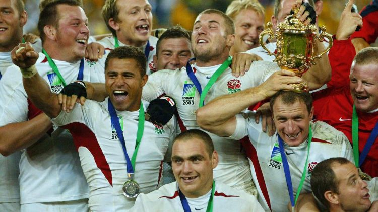

Le rugby se professionnalise en 1995. Les trois nations principales de l’hémisphère Sud dans le domaine du rugby se regroupent et forment SANZAR (Afrique du sud, Nouvelle-Zélande, Argentine) qui est chargé de vendre les droits de diffusion télévisuelle du Super 12 — devenu depuis Super 15 — et du Tri-nations — devenu rugby Championship.
L’équipe d'Afrique du Sud participe pour la première fois à la Coupe du monde en 1995, qu'elle organise et remporte. Les Springboks (surnom de l'équipe d'Afrique du Sud) battent l'équipe de Nouvelle-Zélande en finale par 15 à 12.
La Coupe d'Europe de rugby à XV a été créée en 1995 par le Comité des cinq nations « afin de proposer un nouveau niveau de compétition professionnelle transfrontalièr.»
L'Italie rejoint le Tournoi en 2000, le Tournoi des Six Nations succède au Tournoi des Cinq Nations.
La première équipe de l'Hémisphère Nord à remporter la Coupe du monde de rugby à XV est l'Angleterre en 2003. Elle bat l'équipe d'Australie en finale sur le score de 20 à 17. Elle remet son trophée en jeu en 2007, parvient jusqu'en finale et perd contre l'Afrique du Sud 15 à 6.

D'un événement sportif à popularité modérée en 1987, la compétition devient rapidement l'une des rencontres sportives majeures derrière les Jeux olympiques et la Coupe du monde de football : près de cent équipes disputent les tournois de 2003 et 2007 et plus de 3 milliards de téléspectateurs cumulés suivent les matchs en 1999 et 2003.